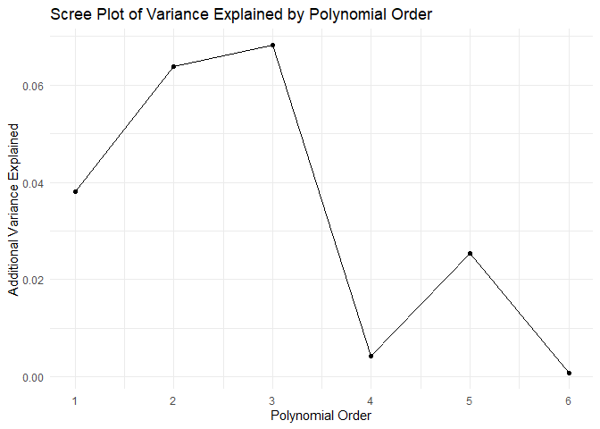
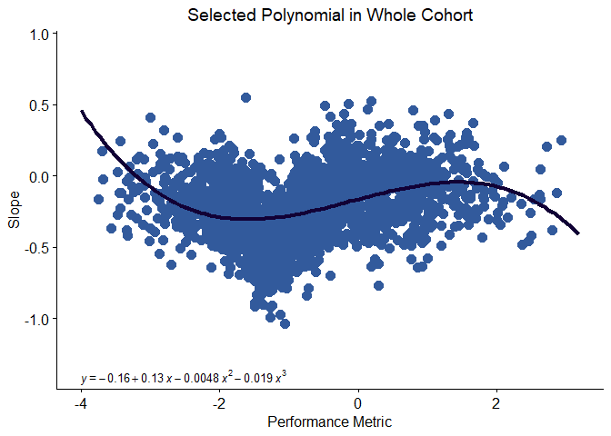
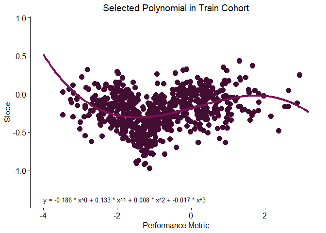
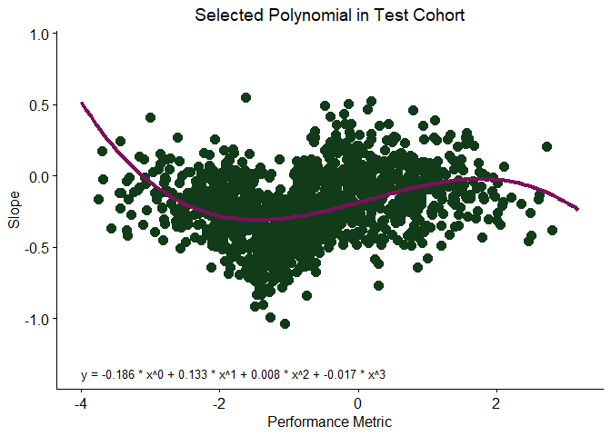
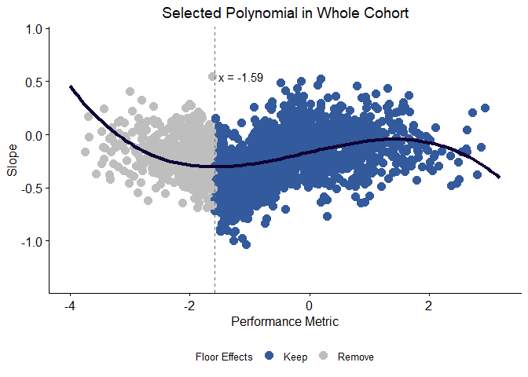
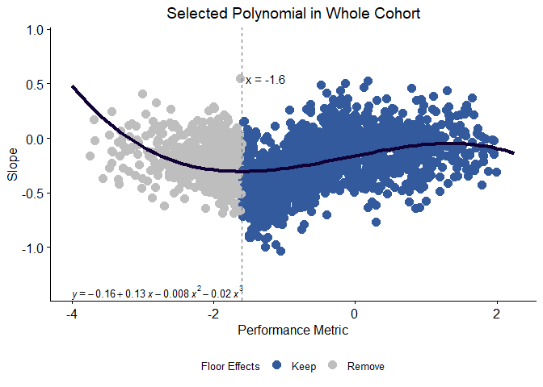

Longpoly provides a suite of tools to analyse longitudinal data. These are intended to be applied in instances where expected rates of change may vary across performance levels. The motivating use case for longpoly was to investigate how average rates of cognitive decline depend on level of impairment, but its utility extends to longitudinal data for other outcomes where similar relationships may be observed.
This approach provides a novel “performance-adjusted” measure of rates of change. Either mean performance or baseline performance can be used for this adjustment. Linear slopes are fit over an individual’s longitudinal observations, and their performance metric is calculated (i.e., mean or baseline). Next, a polynomial is fit at the group level to predict rates of change as a function of the chosen performance metric. A polynomial here allows for this relationship to be non-linear, and longpoly provides tools to select the polynomial order. Finally, the residuals from this model are extracted as a measure of the extent to which an individual’s rate of change is faster or slower than is typical for their level of performance.
In the case of cognitive decline, this approach also offers a data-driven method to identify floor effects. Floor effects occur when cognitive assessments lack sensitivity to provide accurate measurements of performance in lower ranges. For longitudinal data, this means that cognitive decline in this range also cannot be reliably quantified. After fitting a polynomial model, longpoly can solve for the local minimum in the lower range of mean/baseline performance to identify the point where impaired performance becomes associated with slowed decline. While this is interpreted to reflect the range of performance where floor effects occur, it may alternatively reflect a true plateau in decline that occurs with advanced impairment. However, identifying this effect is also of interest as it is difficult to analyse rates of decline in participants in a plateau alongside those elsewhere on the spectrum of performance due to their fundamental differences. Longpoly can be used to filter out individuals with performance in the range for floor effects that it identifies.
Installation
Longpoly can be installed from GitHub as follows.
# install.packages("devtools")
devtools::install_github("shffer/longpoly")Example
Note, the below example workflow uses mean performance as the level of performance. This is the default for all longpoly functions. If baseline is preferred, add performance_metric = "baseline" to all function calls.
1. Get Slopes and Performance
The first step in the workflow is to submit a longitudinal data set to get_slopes_and_performance(). This function returns a tibble with columns for “id”, “performance_slope”, and one of either “performance_mean” or “performance_baseline” depending on the user selection (by specificing performance_metric = “mean” or “baseline”). For the purposes of this example, I will create a dummy dataset of five participants, each with three timepoints.
n_participants = 5
n_timepoints = 3
set.seed(2222)
dummy <- data.frame(
id = rep(1:n_participants, each = n_timepoints),
timepoint = rep(1:n_timepoints, times = n_participants),
performance = rnorm(n_participants * n_timepoints, mean = 0, sd = 1)
)
dummy |> head(n = 6)
#> id timepoint performance
#> 1 1 1 -0.3380621
#> 2 1 2 0.9391643
#> 3 1 3 1.7377190
#> 4 2 1 0.6963261
#> 5 2 2 0.4622959
#> 6 2 3 -0.3150868This can now be used with get_slopes_and_performance(). Load longpoly
Apply the function (specifying the column names)
sm <- get_slopes_and_performance(
data = dummy,
id_col = "id",
time_col = "timepoint",
outcome_col = "performance"
)
sm
#> # A tibble: 5 × 3
#> id performance_slope performance_mean
#> <int> <dbl> <dbl>
#> 1 1 1.04 0.780
#> 2 2 -0.506 0.281
#> 3 3 0.892 1.10
#> 4 4 -1.06 0.827
#> 5 5 1.07 -0.853A Note About Simulated Data
The dummy data used for get_slopes_and_performance() did not simulate any relationship between mean and slope values and is therefore of limited use in illustrating the utility of the other functions in longpoly. Rather than using this output, the remainder of this example workflow makes use of the longpoly_example_data example cognitive data set that is shipped with longpoly. In creating this data, 1000 mean values () were initially sampled from (cognitively unimpaired participants) and another 1000 mean values were then sampled from (participants with cognitive impairment). The data were combined and slopes () were assigned conditionally as follows:
- if
- if
- if
- if
- if
Given this, a non-linear relationship is expected where minimal decline is observed when mean performance is above -0.5. For those with lower mean performance, faster decline is expected until mean performance reaches -1.5 at which point decline slows again. Floor effects are therefore simulated to occur when .
example_data <- longpoly::longpoly_example_data
example_data |> head(n = 10)
#> # A tibble: 10 × 3
#> id performance_mean performance_slope
#> <int> <dbl> <dbl>
#> 1 1 0.235 0.127
#> 2 2 -0.331 0.0715
#> 3 3 -0.312 -0.215
#> 4 4 -2.30 0.126
#> 5 5 -0.171 -0.215
#> 6 6 0.140 -0.219
#> 7 7 -1.50 -0.735
#> 8 8 -1.01 -0.444
#> 9 9 -0.948 -0.372
#> 10 10 -0.494 0.001562. Test Polynomials
The tibble output from get_slopes_and_performance() (or the example data) can be used for testing models that describe the relationship between slope and mean values using test_polynomial(). This function assigns participants in to train and test data sets and fits polynomials up to a maximum order specified by the user. It returns a list containing:
polynomial_results - a tibble with columns recording the order of each polynomial tested with the corresponding proportion of variance explained (PVE) in test and train data, as well as the additional PVE in the test data* for every increase in polynomial order
train_ids - a character vector of ids allocated to the train data set in model development
test_ids - a character vector of ids allocated to the test data set in model development
scree_plot - a visualisation the additional PVE in the test data* for higher order polynomial models.
*PVE in the test data is is calculated as follows:
Where:
= Calculated slope for the individual test set
= Predicted slope for the individual in the test set
= Average of the slopes computed in the test set
set.seed(1111)
test_results <- test_polynomial(data = example_data, test_proportion = 1/3, max_order = 6)
test_results$polynomial_results
#> # A tibble: 6 × 4
#> order pve_in_train_data pve_in_test_data additional_pve
#> <int> <dbl> <dbl> <dbl>
#> 1 1 0.0365 0.0381 0.0381
#> 2 2 0.0939 0.102 0.0639
#> 3 3 0.148 0.170 0.0682
#> 4 4 0.152 0.174 0.00417
#> 5 5 0.204 0.200 0.0254
#> 6 6 0.204 0.200 0.000795
plot(test_results$scree_plot)
These outputs suggest that additional PVE plateaus at models of the 4th order or higher indicating that a 3rd order polynomial is appropriate for the example data set.
2a Find Polynomial
Visual assessment of the scree plot above may not always readily discern an appropriate polynomial order and a data driven approach may be preferred. The find_polynomial()function offers an alternative approach to selecting a model that addresses this. Specifically, across all models is extracted, and the most parsimonious model with (where is a user defined threshold) is selected. This allows the user to determine a trade-off between model fit (and potential overfitting) and model simplicity. The function returns a list containing:
polynomial_results - a tibble with columns recording the order of each polynomial tested with the corresponding proportion of variance explained (PVE) in test and train data (these columns will be identical to those returned from
test_polynomial()if the same data and seed are used)selected_order - the order of the selected model (based on the criteria)
selected_model_coefficients - coefficients of the selected model (based on the criteria)
train_ids - a character vector of ids allocated to the train data set in model development
test_ids - a character vector of ids allocated to the test data set in model development
Setting with the example data returns the following
set.seed(1111)
find_poly_results <- find_polynomial(data = example_data, test_proportion = 1/3, max_order = 6, x = 0.05)
find_poly_results[1:3]
#> $polynomial_results
#> # A tibble: 6 × 3
#> order pve_in_train_data pve_in_test_data
#> <int> <dbl> <dbl>
#> 1 1 0.0365 0.0381
#> 2 2 0.0939 0.102
#> 3 3 0.148 0.170
#> 4 4 0.152 0.174
#> 5 5 0.204 0.200
#> 6 6 0.204 0.200
#>
#> $selected_order
#> [1] 3
#>
#> $selected_model_coefficients
#> (Intercept) poly(performance_mean, 3, raw = TRUE)1
#> -0.164037069 0.129172597
#> poly(performance_mean, 3, raw = TRUE)2 poly(performance_mean, 3, raw = TRUE)3
#> -0.004785321 -0.018976382The function selects the third order polynomial and is given by . While this agrees with test_polynomial(), note that a more conservative value for x would have selected a higher order model. For example would select the fifth order model since no lower order models have .
3. Implement Polynomial
After selecting a polynomial order (typically either by reviewing the scree plot output by test_polynomial() or by using find_polynomial() to select on the data-driven process described above), this model is implemented using implement_polynomial(). An optional parameter, floor_effects(), determines whether individuals with floor effects should be identified. If this is set to true, the floor_range() argument must be specified and reflects the range in mean values over which a minimum value for slope will be found. The function returns a list with the following:
- model_formula — the formula of the final model
-
final_data — a tibble with columns for “id”, “performance_slope”, “performance_mean”, “predicted_slope”, and “residual”. If
floor_effects = TRUE, an additional column “floor_effects” is appended with either “keep” or “remove” reflecting whether the record should be removed based on the identified performance_mean threshold for floor effects - threshold — if floor_effects = TRUE, this records the threshold used for floor effect classifications
For the example data, Steps 2 and 2a (above) selected a third order polynomial. Implementing this model returns the following
poly_out <-
implement_polynomial(
data = example_data,
order = 3,
floor_effects = TRUE,
floor_range = c(min(example_data$performance_mean), 0)
)
poly_out$model_formula
#> [1] "y = -0.164 +0.129x -0.005x^2 -0.019x^3"
# temporarily shorten names in final_data so example can be printed without spilling over
poly_out$final_data %>% set_names(gsub("performance_", "", colnames(poly_out$final_data))) %>% head
#> # A tibble: 6 × 6
#> id mean slope predicted_slope residual floor_effects
#> <int> <dbl> <dbl> <dbl> <dbl> <fct>
#> 1 1 0.235 0.127 -0.134 0.261 keep
#> 2 2 -0.331 0.0715 -0.207 0.278 keep
#> 3 3 -0.312 -0.215 -0.204 -0.0105 keep
#> 4 4 -2.30 0.126 -0.255 0.381 remove
#> 5 5 -0.171 -0.215 -0.186 -0.0289 keep
#> 6 6 0.140 -0.219 -0.146 -0.0725 keep
poly_out$threshold
#> [1] -1.592723Importantly, a “residual” column has been added in the final_data tibble. This is the performance-adjusted measure of rate of change that is the intended output from longpoly.
Note also that the floor effects threshold has been identified at -1.59. The example data were simulated to show floor effects when mean performance < -1.5 (a noise factor) so this is a reasonable approximation of what was expected.
4. Plot Polynomial
plot_polyomial() can be used to produce plots of a polynomial of a given order in the train and test data sets during model development (using the id vectors produced by test_polynomial() or find_polynomial to define these), in the whole cohort, and in the whole cohort with keep/remove status based on floor effects assigned (use the threshold from implement_polynomial() for this). These plots are returned as ggplot objects in a named list.
plots <-
plot_polynomial(
data = poly_out$final_data,
order = 3,
whole_cohort_title = "Selected Polynomial in Whole Cohort",
whole_cohort_only = FALSE,
train_id = test_results$train_ids,
test_id = test_results$test_ids,
train_title = "Selected Polynomial in Train Cohort",
test_title = "Selected Polynomial in Test Cohort",
keep_remove = TRUE,
threshold = poly_out$threshold,
threshold_linetype = "dashed",
threshold_line_color = "#5f6a7a",
annotate_floor_thresh = TRUE,
legend_position = "bottom",
)
plots
#> Warning: Computation failed in `stat_regline_equation()`.
#> Caused by error:
#> ! object 'performance_slope' not found
#> Warning: Computation failed in `stat_regline_equation()`.
#> Caused by error:
#> ! object 'performance_slope' not found
5. Data Filtering
Simulated data offers the benefit of knowing what our results should look like. We expected a third order polynomial with a floor effect when mean performance , as was seen. However, our final model also shows a prominent downward slope in its right tail that gives the impression that faster decline (more negative slopes) is expected when mean values exceed a value of approximately 2. This was not an effect that was simulated to exist – in fact, slopes were sampled from for all mean values meaning that the polynomial should be flat in this region to reflect the “true” effect.
This observation reflects the (misleading) influence that scarce data points in the extremes of the distribution of mean performance can exert. Assessment of the whole cohort plot above suggests that, for data with mean performance > 2, random sampling led to an over representation of more negative slopes. Review of the data in this range confirms this.
example_data %>% filter(performance_mean > 2) %>% select(performance_slope) %>% summary
#> performance_slope
#> Min. :-0.4833
#> 1st Qu.:-0.2842
#> Median :-0.1766
#> Mean :-0.1760
#> 3rd Qu.:-0.1244
#> Max. : 0.2519If we sampled enough observations in this range, these summary statistics would instead reflect the distribution from which it was sampled. However, these mean values come from the Cognitively Unimpaired participants (see ‘A Note About Simulated Data’ above) and were sampled from . A score of 2 is therefore 2SD from the mean of its distribution and explains why data are scarce in this range.
The function filter_slopes_and_mean() filters data in the extreme ranges for mean values according to user-defined criteria. A window reflecting the “width” of the extreme range is defined and a minimum number of observations for that range is defined. If the actual number of observations is less than the specified minimum, data in the window are removed. This can be performed on the left or right tails (or both), and if data points are removed from either, the polynomial fitting process (i.e., Steps 2 to 4) should be repeated.
Since the values in the right tail in the example data were simulated from a separate distribution ( ) than those in the left ( ), I will perform filtering separately. For the right tail, I will set the window size to capture values above 2 (i.e., those more than 2SD above the distribution mean), and require at least 25 (out of 1000) observations in that range.
filtered_example_data <- filter_slopes_and_mean(
data = example_data,
window_size = max(example_data$performance_mean) - 2,
min_obs = 25,
max_filter = TRUE,
min_filter = FALSE
)
#> [1] "number of observations in max window: 22"
#> [1] "user defined miniumum number of observations: 25"
#> [1] "data in max window removed"I will now filter this data set for ranges in the left tail. For this, I will set the window size to capture any mean values less than - 3 (i.e., those more than 2SD below the distribution mean) and again require at least 25 observations.
filtered_example_data <- filter_slopes_and_mean(
data = filtered_example_data,
window_size = -3 - min(filtered_example_data$performance_mean),
min_obs = 25,
max_filter = FALSE,
min_filter = TRUE
)
#> [1] "number of observations in min window: 37"
#> [1] "user defined miniumum number of observations: 25"
#> [1] "data in min window not removed"For brevity, I will skip the test_polynomial and find_polynomial steps and instead implement a third order polynomial and filter for floor effects (but in practice, the chosen development steps should not be skipped).
poly_out_filtered <-
implement_polynomial(
data = filtered_example_data,
order = 3,
floor_effects = TRUE,
floor_range = c(min(filtered_example_data$performance_mean), 0)
)
plots_filtered <-
plot_polynomial(
data = poly_out_filtered$final_data,
order = 3,
whole_cohort_title = "Selected Polynomial in Whole Cohort",
whole_cohort_only = TRUE,
keep_remove = TRUE,
threshold = poly_out_filtered$threshold,
threshold_linetype = "dashed",
threshold_line_color = "#5f6a7a",
annotate_floor_thresh = TRUE,
legend_position = "bottom",
)
plots_filtered$keep_remove
#> Warning: Computation failed in `stat_regline_equation()`.
#> Caused by error:
#> ! object 'performance_slope' not found
Based on our minimum count of 25 observations, the maximum range of mean scores was filtered (n = 22 with > 2) but not the minimum range (n = 37 with < -3). The identified threshold (now -1.6) did not change meaningfully from its previous value (i.e., -1.59), but the downward trend on the right tail is now less prominent.
The residuals from this model can now be extracted from the participants above the floor effects threshold:
poly_out_filtered$final_data %>%
filter(floor_effects == "keep") %>%
select(id, residual) %>%
head(n = 10)
#> # A tibble: 10 × 2
#> id residual
#> <int> <dbl>
#> 1 1 0.258
#> 2 2 0.276
#> 3 3 -0.0132
#> 4 5 -0.0319
#> 5 6 -0.0760
#> 6 7 -0.428
#> 7 8 -0.164
#> 8 9 -0.0977
#> 9 10 0.226
#> 10 11 0.129